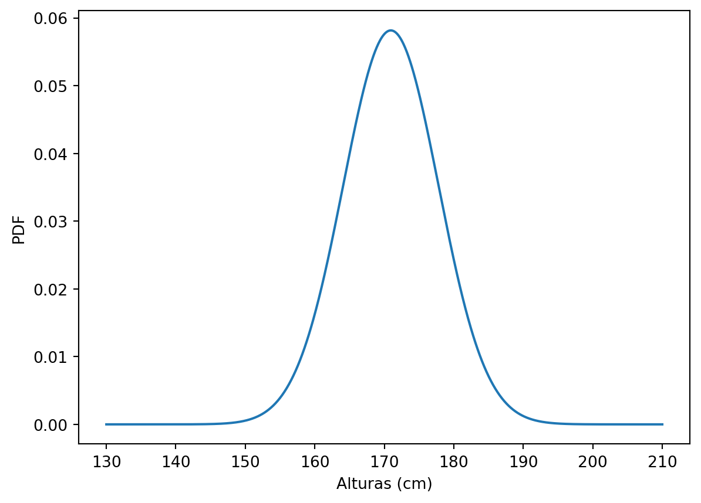
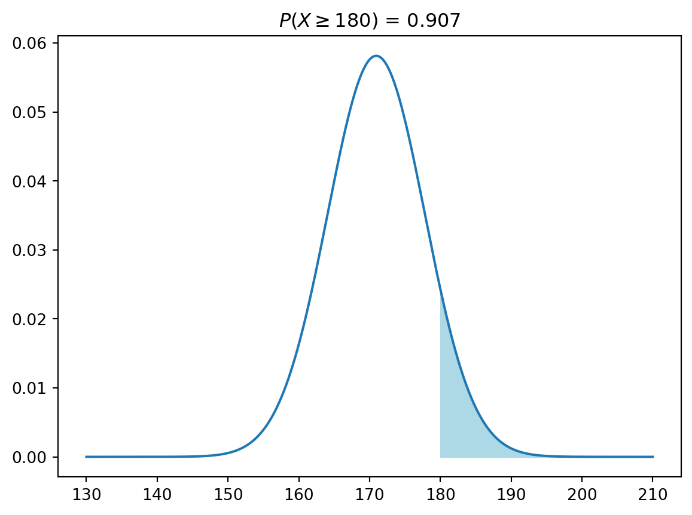
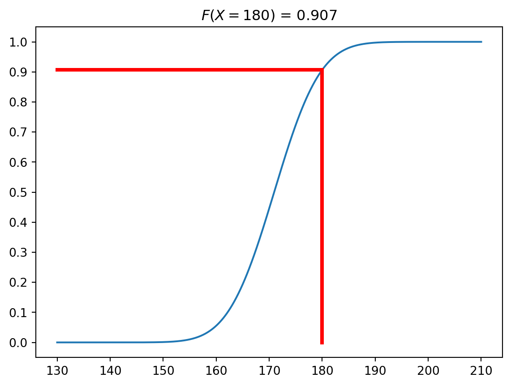
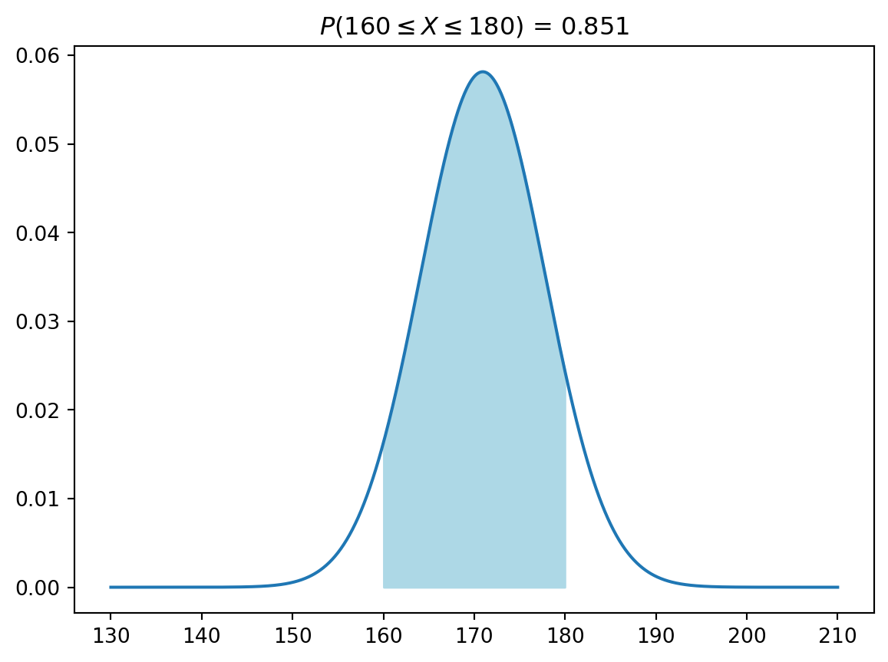
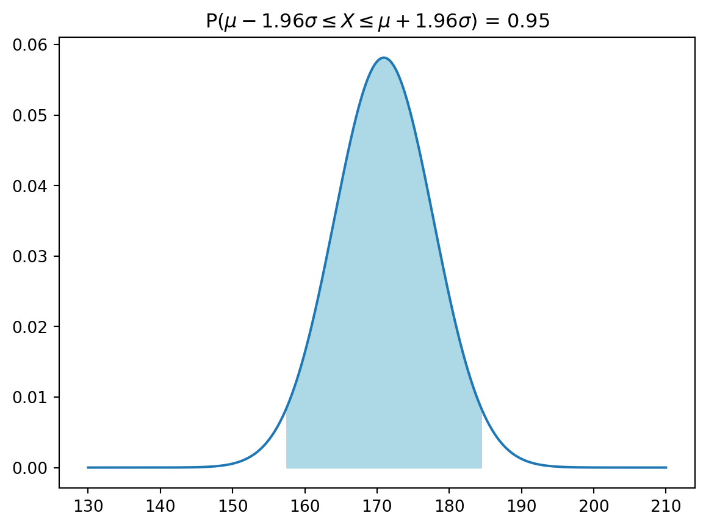

import numpy as np
import matplotlib.pyplot as plt
import scipy.stats as stO modelo da distribuição normal
Função de densidade e função de probabilidade acumulada
Explora a distribuição normal para extrair probabilidades
DicaBibliotecas utilizadas nesta seção

1 Simulando uma distribuição de probabilidade normal
Vamos utilizar nosso modelo teórico de probabilidades (a distribuição normal) para prever o que seria esperado para as frequências relativas de alunos de diferentes alturas. Para isso precisamos calcular a probabilidade abaixo da curva para diferentes faixas de altura.
Estritamente falando a equação da distribuição normal abaixo:
\[ f(x) = \frac{1}{\sqrt{2\pi\sigma^2}} e^{-\frac{1}{2} \left(\frac{x - \mu}{\sigma} \right)^2}, \quad x \in \mathbb{R} \mid -\infty \leq x \leq +\infty \]
é a Função de Densidade de Probabilidade (PDF) da distribuição normal. Com base nesta equação, as probabilidades para intervalos de \(X\) são obtidas por meio da Função de Probabilidade Acumulada (CDF).
mi = 170.94
sigma = 6.86
x = np.linspace(130, 210, 1000)
pdf = st.norm.pdf(x = x, loc = mi, scale = sigma)
cdf = st.norm.cdf(x = x, loc = mi, scale = sigma)A distribuição normal com média \(X = 170.94\) e \(\sigma = 6.86\) estão representadas abaixo (PDF - Figura 2 (a); CDF - Figura 2 (b)).
plt.plot(x, pdf)
plt.xlabel('Alturas (cm)')
plt.ylabel('PDF')
plt.show()
plt.plot(x, cdf)
plt.xlabel('Alturas (cm)')
plt.ylabel('CDF')
plt.show()


2 Obtendo probabilidades de uma distribuição normal
2.1 A probabilidade de \(X\) ser menor ou igual a \(x_1\): \(P(X \le x_1)\)
mi = 170.94
sigma = 6.86
x1 = 160
x = np.linspace(130, 210, 1000)
pdf_y = st.norm.pdf(x = x, loc = mi, scale = sigma)
cdf_y = st.norm.cdf(x = x, loc = mi, scale = sigma)
p = st.norm.cdf(x = x1, loc=mi, scale=sigma)
plt.plot(x, pdf_y)
plt.fill_between(x, pdf_y, where = (x <= x1), color='lightblue')
plt.title(f'$P(X \leq {x1})$ = {np.round(p, 3)}')
plt.show()
plt.plot(x, cdf_y)
plt.yticks(np.arange(0, 1.1, 0.1))
plt.title(f'$F(X = {x1}$) = {np.round(p, 3)}')
plt.plot([x1, x1], [0, p], color = 'red', linewidth = 3)
plt.plot([130, x1], [p, p], color = 'red', linewidth = 3)
plt.show()

2.2 A probabilidade de \(X\) ser maior ou igual a \(x_1\): \(P(X \ge x_1)\)
mi = 170.94
sigma = 6.86
x1 = 180
x = np.linspace(130, 210, 1000)
pdf_y = st.norm.pdf(x = x, loc = mi, scale = sigma)
cdf_y = st.norm.cdf(x = x, loc = mi, scale = sigma)
p = st.norm.cdf(x = x1, loc=mi, scale=sigma)
plt.plot(x, pdf_y)
plt.fill_between(x, pdf_y, where = (x >= x1), color='lightblue')
plt.title(f'$P(X \geq {x1})$ = {np.round(p, 3)}')
plt.show()
plt.plot(x, cdf_y)
plt.yticks(np.arange(0, 1.1, 0.1))
plt.title(f'$F(X = {x1}$) = {np.round(p, 3)}')
plt.plot([x1, x1], [0, p], color = 'red', linewidth = 3)
plt.plot([130, x1], [p, p], color = 'red', linewidth = 3)
plt.show()


2.3 A probabilidade de \(X\) estar entre \(x_1\) e \(x_2\): \(P(x_1 \le X \le x_2)\)
mi = 170.94
sigma = 6.86
x1 = 160
x2 = 180
x = np.linspace(130, 210, 1000)
pdf_y = st.norm.pdf(x = x, loc = mi, scale = sigma)
cdf_y = st.norm.cdf(x = x, loc = mi, scale = sigma)
p1 = st.norm.cdf(x = x1, loc=mi, scale=sigma)
p2 = st.norm.cdf(x = x2, loc=mi, scale=sigma)
p = p2 - p1
plt.plot(x, pdf_y)
plt.fill_between(x, pdf_y, where = ((x >= x1) & (x <= x2)), color='lightblue')
plt.title(f'$P({x1} \leq X \leq {x2})$ = {np.round(p, 3)}')
plt.show()
plt.plot(x, cdf_y)
plt.yticks(np.arange(0, 1.1, 0.1))
plt.title(f'$F(X = {x1}$) = {np.round(p, 3)}')
plt.title(f'$F(X = {x2}$) = {np.round(p, 3)}')
plt.plot([x1, x1], [0, p1], color = 'red', linewidth = 3)
plt.plot([130, x1], [p1, p1], color = 'red', linewidth = 3)
plt.plot([x2, x2], [0, p2], color = 'red', linewidth = 3)
plt.plot([130, x2], [p2, p2], color = 'red', linewidth = 3)
plt.show()


2.4 Representando \(x_1\) e \(x_2\) por \(\mu \pm z\sigma\): \(P(\mu - z\sigma \le X \le \mu + z\sigma)\)
Obs.: \(z\) representa o número de desvios padrões acima ou abaixo de \(\mu\).
mi = 170.94
sigma = 6.86
z = 1.96
x1 = mi - z * sigma
x2 = mi + z * sigma
x = np.arange(130, 210, 0.001)
y = st.norm.pdf(x = x, loc = mi, scale = sigma)
p1 = st.norm.cdf(x = x1, loc=mi, scale=sigma)
p2 = st.norm.cdf(x = x2, loc=mi, scale=sigma)
p = p2 - p1
plt.plot(x, y)
plt.fill_between(x, y, where = ((x >= x1) & (x <= x2)), color='lightblue')
plt.title(f'P($\mu - {z}\sigma \leq X \leq \mu + {z}\sigma$) = {np.round(p, 3)}')
plt.show()

Referências
Blakeslee, Albert F. 1914. «CORN AND MEN: The Interacting Influence of Heredity and Environment—Movements for Betterment of Men, or Corn, or Any Other Living Thing, One-sided Unless They Take Both Factors into Account.» Journal of Heredity 5 (11): 511–18.
Crow, James F. 1997. «Birth defects, Jimson weeds and bell curves». Genetics 147 (1): 1.